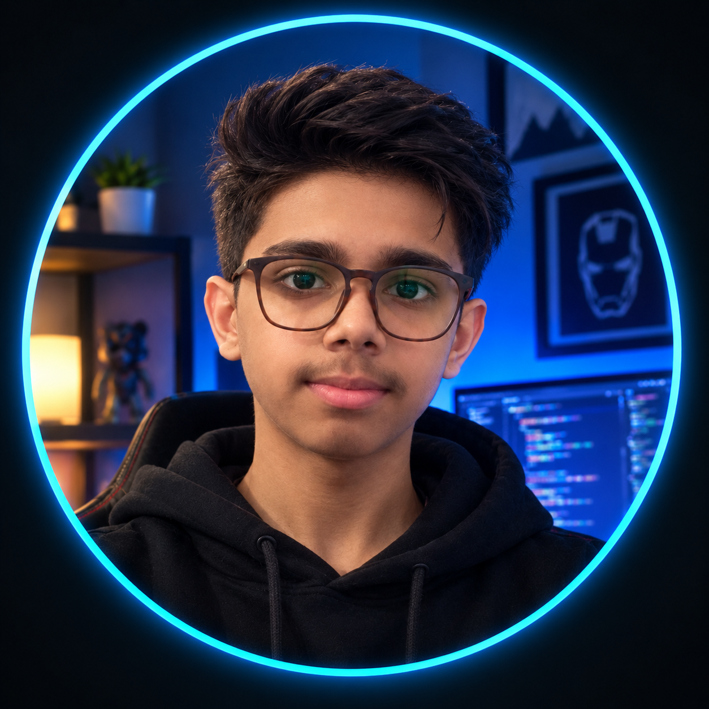

Cyber-Vortex Shubham Kumar Verma
Turning ideas into intelligent solutions through Artificial Intelligence, Python, software development, and modern web technologies.

About Me
I turn complex ideas into intelligent solutions.
I’m a student focused on Artificial Intelligence, software engineering, and real-world problem solving. My journey in technology started with curiosity, but it has grown into something more intentional: understanding how intelligent systems work, building them from the ground up, and continuously improving the way they solve problems. I work across Python, AI/ML, software development , APIs, and modern web technologies, using projects as my primary way to learn. Rather than stopping at tutorials, I prefer turning concepts into working systems — experimenting, debugging, iterating, and learning from what breaks along the way. 🧠 I’m also exploring product development and entrepreneurship, where technology meets real-world needs. Building these ideas has taught me to think beyond individual features — about users, scalability, reliability, and the impact a product can create. I’m still at the beginning of my journey, but my direction is clear: to become an AI Engineer capable of turning complex problems into practical, intelligent products. Learn deeply. Build relentlessly. Engineer intelligently. ⚡
Core Expertise
Technical Skills
A comprehensive toolkit for building intelligent systems and solving complex problems
Programming Languages
AI/ML Frameworks
Tools & Technologies
Specializations
Continuous Learning Mindset
The AI field evolves rapidly, and I'm committed to staying at the forefront of innovation. Currently exploring Transformer architectures, MLOps practices, and edge AI deployment.
Featured Projects
A showcase of AI and machine learning projects that demonstrate practical problem-solving and technical expertise


Let's Connect
Ready to discuss AI opportunities, collaborate on innovative projects, or explore how machine learning can solve your challenges
Get In Touch
Currently open to full-time AI Engineer positions and exciting freelance projects. Available for interviews and discussions.
Ready to Build the Future?
Whether you're looking for an AI Engineer to join your team, need consultation on machine learning projects, or want to discuss the latest in AI research, I'd love to hear from you.
💡 Typically responds within 24 hours